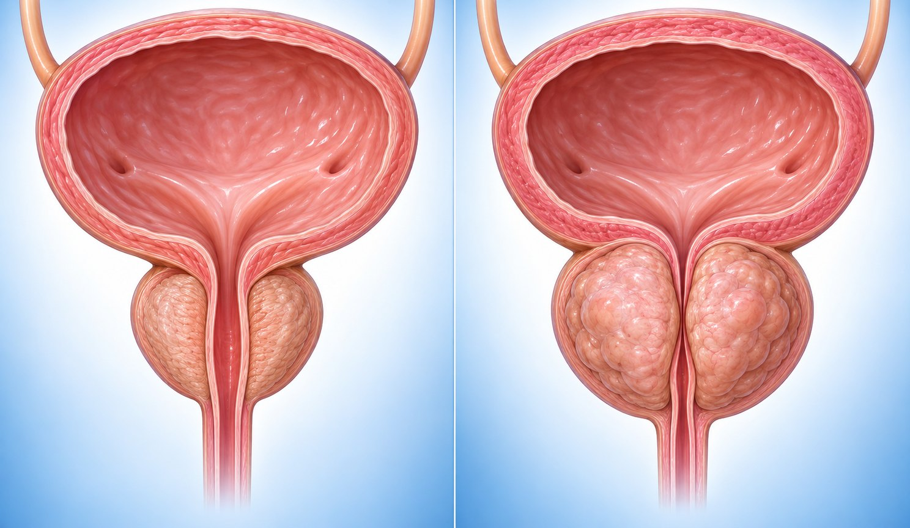

보통 크기 커진 전립선전립선은 방광 바로 아래에서 소변길(요도)을 감싸고 있어, 커지면 소변길이 좁아져 소변보기가 불편해질 수 있습니다.
이 설문은 그런 소변 증상 7가지와 불편한 정도를 점수로 적는 국제 표준 설문입니다. 치료 전후를 비교할 때도 씁니다.
소변에 피가 섞이거나 소변볼 때 아프면 점수와 상관없이 당일 진료를 받으세요. 소변이 마려운데 갑자기 전혀 나오지 않으면 즉시 응급실로 가세요.
성명 (Name)
생년월일 (DOB)
작성일 (Date)
| 1~7번 증상 (Symptom score)최근 한 달 동안 · 칸 안 숫자 = 점수 | 전혀 없다 | 드물게 있다(5번 중 1번) | 가끔 있다(5번 중 1, 2번) | 절반 정도(5번 중 2, 3번) | 절반 이상(5번 중 3, 4번) | 항상(거의 매번) |
|---|---|---|---|---|---|---|
| 1.배뇨 후 시원치 않고, 소변이 남아있는 느낌을 받는 경우가 있습니까? | 0 | 1 | 2 | 3 | 4 | 5 |
| 2.배뇨 후 2시간이 채 지나기 전에 또 소변을 보는 경우가 있습니까? | 0 | 1 | 2 | 3 | 4 | 5 |
| 3.배뇨 중 오줌줄기가 끊어졌다가 다시 힘을 주면 나오는 경우가 있습니까? | 0 | 1 | 2 | 3 | 4 | 5 |
| 4.소변이 마려울 때 참기가 힘든 경우가 얼마나 자주 있습니까? | 0 | 1 | 2 | 3 | 4 | 5 |
| 5.배뇨시 소변줄기가 약하다고 느낀 경우가 얼마나 자주 있습니까? | 0 | 1 | 2 | 3 | 4 | 5 |
| 6.소변이 마려운데 나오지 않고 한참 기다려야 나오는 경우가 있습니까? | 0 | 1 | 2 | 3 | 4 | 5 |
| 7번은 횟수로 답합니다 | 0번 | 1번 | 2번 | 3번 | 4번 | 5번 이상 |
| 7.밤에 주무시는 동안 몇 번이나 깨어서 소변을 보십니까? | 0 | 1 | 2 | 3 | 4 | 5 |
| 8번 삶의 질 (Quality of life)0~6점 | 매우 만족 | 만족 | 대체로 만족 | 그저 그렇다 | 대체로 불편 | 아주 불편 | 이 상태로는 못살겠다 |
|---|---|---|---|---|---|---|---|
| 8.만일 지금 같은 배뇨상태가 계속 지속된다면 어떻게 생각되십니까? | 0 | 1 | 2 | 3 | 4 | 5 | 6 |
직원용 · 채점 안내
증상 점수 (1~7번 합) / 35점
삶의 질 (8번) / 6점 · 합계에 넣지 않음
| 경증 (Mild) | 중등도 (Moderate) | 중증 (Severe) |
|---|---|---|
| 0~7점 | 8~19점 | 20~35점 |
점수는 증상의 정도일 뿐, 진단이 아닙니다. 치료 여부와 방법은 진료 때 의사가 판단합니다.